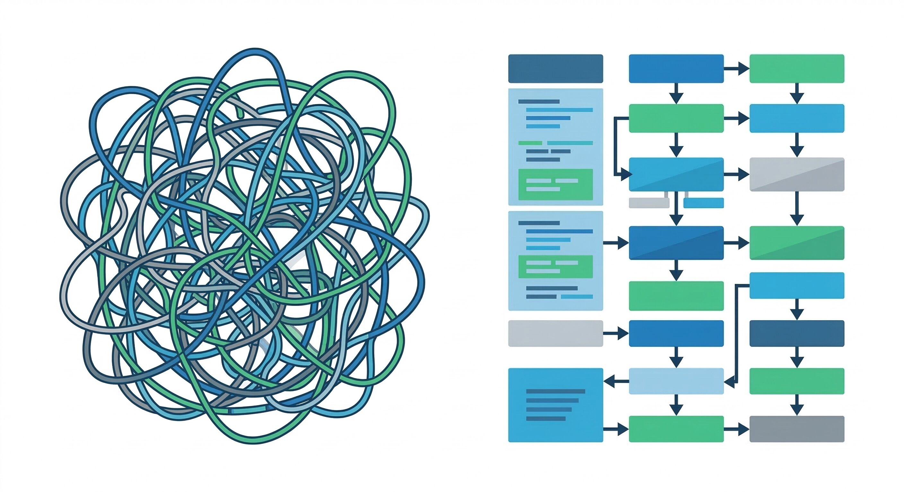

Good Programming Style
Writing code that works is only half the job. Code must also be readable, maintainable, and well-organized. Good programming style makes your code easier to understand, debug, and modify — for yourself and for others.
Learning Objectives
- 11.5.3.12 Follow rules of good programming style
Conceptual Anchor
The Essay Analogy
Imagine reading an essay with no paragraphs, no punctuation, and random abbreviations. You'd struggle to understand it even if the ideas were brilliant. Code is the same — without proper formatting, naming, and comments, even correct code becomes unreadable. Good style is like good grammar: it communicates your intent clearly.

Rules & Theory
The 6 Pillars of Good Programming Style
Proper programming style significantly reduces maintenance costs and increases the lifetime of software. A perfectly working code is not enough; it must be professional.
| Pillar | Description & Best Practices | Example |
|---|---|---|
| 1. Readability | Code must be easily understood by colleagues. It should be consistently formatted and easily show how different parts fit into the whole. | Using a clear, logical structure. |
| 2. Maintainability | Code should be straightforward for another programmer to fix bugs or modify. It must be robust to handle unexpected inputs without crashing. | Using constants (const int MAX = 10;) instead of hard-coded numbers. |
| 3. Comments | Explain why the code does something, not what it does. Include your name and date at the top of the file. Never leave "dead code" (commented-out code) in the final version. | // Calculate final tax after discount |
| 4. Naming | Use descriptive names that reveal intent. Use camelCase (studentMarks) or underscores (student_marks). Use i, j, k only for loops. |
int currentMax; instead of int cMX; |
| 5. Indentation & Whitespace | Use 4 spaces to indent blocks. This clearly marks control flow (loops, ifs). Use blank lines (vertical density) to separate logical blocks. | Aligning if and else statements properly. |
| 6. Output | Provide clear instructions and results to the users. Use proper English with no spelling errors. Assume the user knows nothing about programming. | cout << "Please enter your age: "; |
Maintainability (Craig'n'Dave)
A great explanation of why clean code, meaningful identifiers, and comments are essential for writing professional software.
Bad vs Good Style Example
❌ Bad style (Unreadable, no indentation, meaningless variables, dead code):
public void m() {
int x; int y; // variables
// int oldY;
x=10;y=20;
if(x
✅ Good style (Indented, camelCase, commented, clean output):
/**
* Compares two values and prints the result.
* Written by: John Doe, 2025
*/
public void compareValues() {
int firstValue = 10;
int secondValue = 20;
if (firstValue < secondValue) {
System.out.println("The second value is larger.");
}
}Worked Examples
1 Refactoring: Magic Numbers → Constants
Before:
if (score >= 90) grade = 'A';
tax = salary * 0.13;After:
const int GRADE_A_THRESHOLD = 90;
const double TAX_RATE = 0.13;
if (score >= GRADE_A_THRESHOLD) {
grade = 'A';
}
tax = salary * TAX_RATE;2 Modularity: Breaking Into Functions
Writing modular code means different concerns should be handled by different methods. Don't put everything in main().
// FUNCTION: Calculate average
double calculateAverage(int total, int count) {
return static_cast<double>(total) / count;
}
int main() {
int sum = 250;
int numberOfStudents = 5;
cout << "Average: " << calculateAverage(sum, numberOfStudents) << endl;
return 0;
}Common Pitfalls
Leaving Commented-Out Code
Never leave old attempts or broken code commented out in your final submission (e.g., // methodTryThis(3);). It confuses the reader and makes the code look unfinished.
Over-commenting
Comments that restate the code add clutter, not clarity.
count = count + 1; // add 1 to count is pointless. Explain why instead: // Move to next student record.
Inconsistent Naming
Mixing camelCase and snake_case makes code look unprofessional. Pick one convention and stick with it.
Tasks
List the 6 pillars of good programming style.
Explain the difference between "Code Readability" and "Code Maintainability".
A student submitted this code: int x=5; // set x to 5
// int y=10;
Identify three style rules broken here and fix the code.
Why is it considered bad practice to use variables like a, b, c for a banking application, but acceptable to use i, j, k in loops?
Self-Check Quiz
Q1: What is "dead code" in the context of comments?
Q2: Which naming convention capitalizes the first letter of every word except the first?
Q3: Why should you use vertical whitespace (blank lines)?
Q4: Why is it important to check spelling in your program's Output?